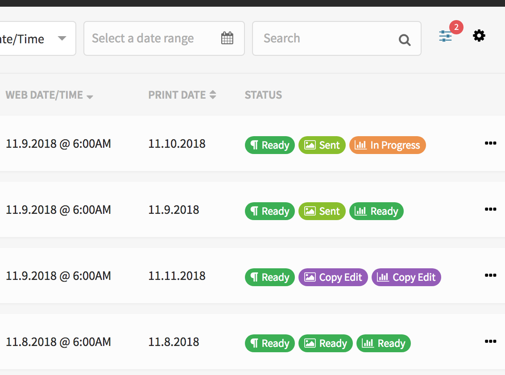
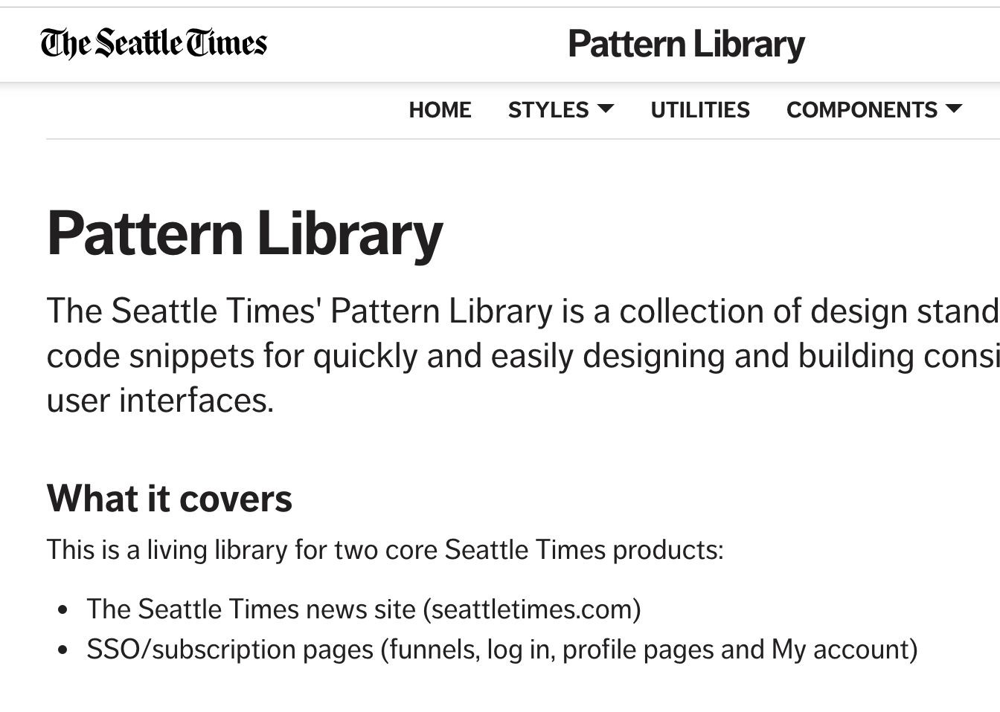
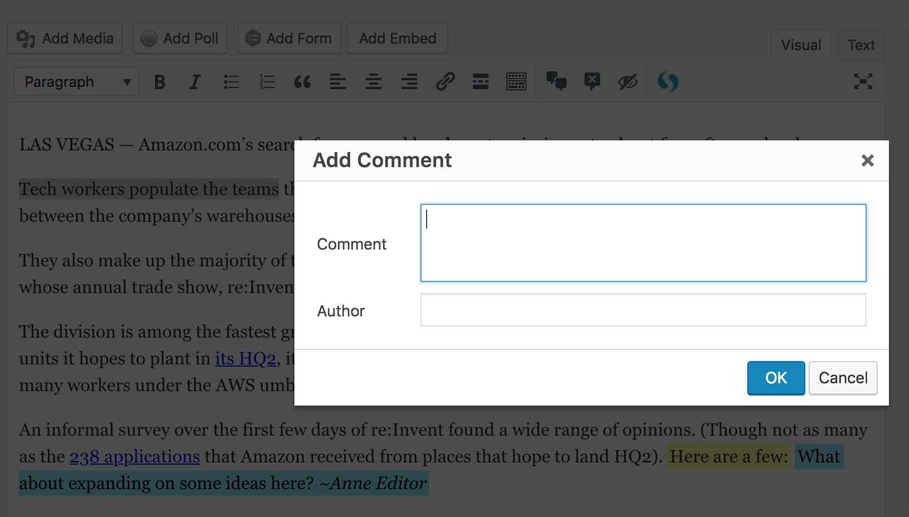

  <main>
    <div class="mv5 ph3">
      <h1>Projects</h1>
      <div class="card-container">
        <a class="card-link" href="https://cedar.seattletimes.com" target="_blank">
          
          <div class="card-text">
            <h2 class="f4 mv2">Cedar</h2>
            <span>A newsroom workflow and planning tool</span>
          </div>
        </a>
        <a class="card-link" href="https://ui.seattletimes.com" target="_blank">
          
          <div class="card-text">
            <h2 class="f4 mv2">Pattern Library</h2>
            <span>Standards for visual content on The Seattle Times</span>
          </div>
        </a>
        <div class="card-link">
          
          <div class="card-text">
            <h2 class="f4 mv2">Annotations</h2>
            <span>A WordPress and TinyMCE plugin for editing and commenting on content</span>
          </div>
        </div>
        <a class="card-link" href="https://www.seattletimes.com/newsletters/" target="_blank">
          
          <div class="card-text">
            <h2 class="f4 mv2">Newsletters</h2>
            <span>A page to sign up and manage newsletter subscriptions on The Seattle Times</span>
          </div>
        </a>
        <a class="card-link" href="https://www.seattletimes.com/photo-video/photography/brothers-harvest-fields-of-gold-in-wheat-country-of-palouse/" target="_blank">
          
          <div class="card-text">
            <h2 class="f4 mv2">Image Gallery</h2>
            <span>Interactive image gallery embedded in article templates</span>
          </div>
        </a>
        <a class="card-link" href="https://www.seattletimes.com/life/travel/washingtons-wild-and-magical-shi-shi-beach-2/" target="_blank">
          
          <div class="card-text">
            <h2 class="f4 mv2">Immersive Template</h2>
            <span>Full-width template for showcasing image-centric news articles</span>
          </div>
        </a>
        <a class="card-link" href="https://www.seattletimes.com/subscribe/signup-offers/" target="_blank">
          
          <div class="card-text">
            <h2 class="f4 mv2">Subscription Landing Page</h2>
            <span>Page showcasing subscription products</span>
          </div>
        </a>
        <a class="card-link" href="https://www.robynm.net/Ipsum">
          
          <div class="card-text">
            <h2 class="f4 mv2">Ipsum</h2>
            <span>A Shakespearean filler text generator</span>
          </div>
        </a>
      </div>
    </div>
  </main>
